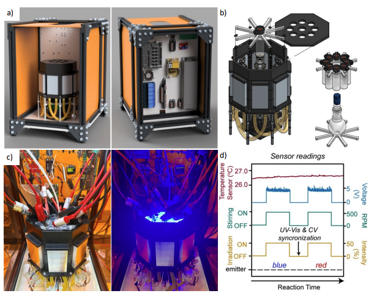
New preprint: Programming electrophotochemical selectivity
Our latest work explores how synchronized light, electricity, and real-time feedback can turn a complex reaction space into an executable chemical program.
Read the preprintDigital Chemistry | Automation | Electrosynthesis
Research Fellow at the University of Glasgow

Research profile
I am a Research Fellow at the University of Glasgow working at the interface of digital chemistry, electrochemistry automation, and programmable chemical systems.
My career has strategically built an interdisciplinary profile at the forefront of digital chemistry, integrating materials science, electrocatalysis, chemical automation, and AI for sustainable energy discovery. I specialize in the development of automated platforms for the controlled stimulus of electro- and photochemistry, utilizing integrated analytical feedback to drive autonomous discovery.
During my PhD, I pioneered automated in-situ analysis to understand complex electrochemical processes at nanointerfaces, leading to a real-time gas monitoring device and a granted patent. I also designed an in-flow electrochemical cell for the ALBA synchrotron enabling real-time electrocatalysis and XANES measurements, complemented by Raman, X-ray spectroscopy and confocal microscopy studies.
My postdoctoral work at the University of Glasgow expanded into digital chemistry with the ElectroChemputer, the first universal framework for programmable electrosynthesis. Since September 2024, I have served as Postdoctoral Researcher and Team Leader of the Chemputer Reactivity Team in the Cronin Group. In this leadership role, I manage multidisciplinary projects focused on advancing reactivity and chemical discovery through robotics.
Outside the lab, I enjoy bringing science to life through illustration, video editing, and 3D modelling. Some of my artwork has even made it onto the front covers of scientific journals.
Video
Scientific illustration
Selected journal cover artwork and visual pieces developed alongside my research.

News

Our latest work explores how synchronized light, electricity, and real-time feedback can turn a complex reaction space into an executable chemical program.
Read the preprint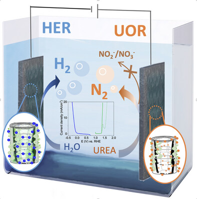
A project that began during my PhD is now published, showing how dynamic sulfur-mediated catalyst-support interfaces can steer selective urea electrolysis.
Read the paper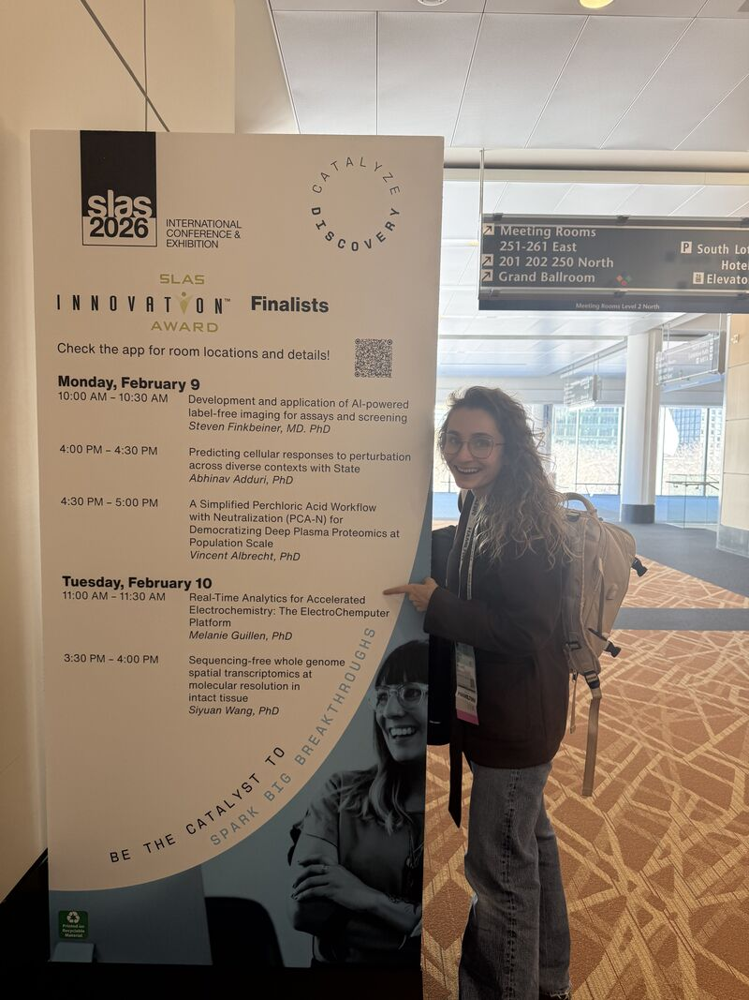
I presented “Real-Time Analytics for Accelerated Electrochemistry: The ElectroChemputer Platform” as one of five Innovation Award finalists in Boston.
View the award finalistsPeer-reviewed publications and preprints listed in my current CV.
Programming electrophotochemical selectivity through feedback-controlled synchronization
ChemRxiv, 2026. Preprint. https://doi.org/10.26434/chemrxiv.15005910/v1
ElectroChemputer with Integrated Monitoring for Programmable Electrochemistry
Chem, 2026, 12, 102907.
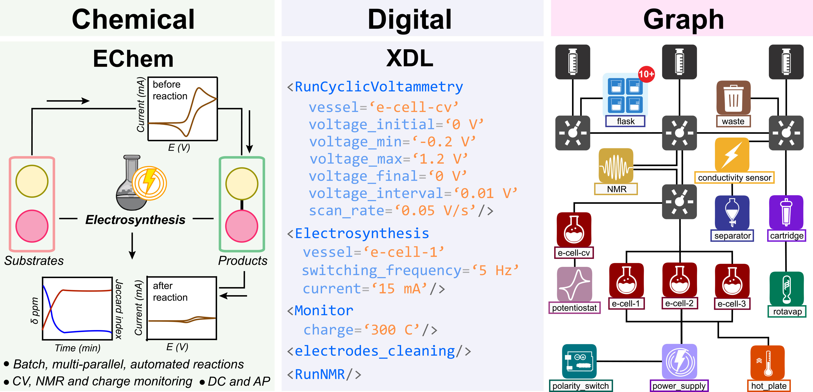
Advanced Functional Materials, 2026.
POM-based Water Splitting Catalyst Under Acid Conditions Driven by its Assembly on Carbon Nanotubes
Advanced Materials, 2025, e12902.

Advanced Science, 2025, 12, e05104.
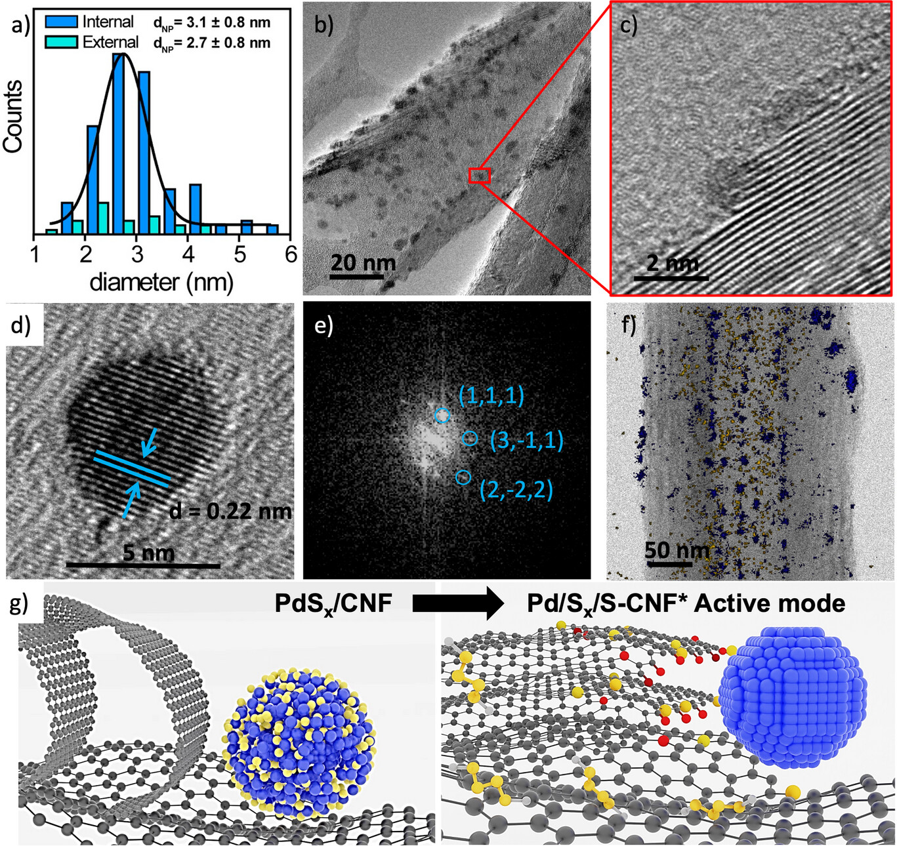
Compression of Molybdenum Blue Polyoxometalate Cluster Rings
Journal of the American Chemical Society, 2025, 147 (12), 10579-10586.
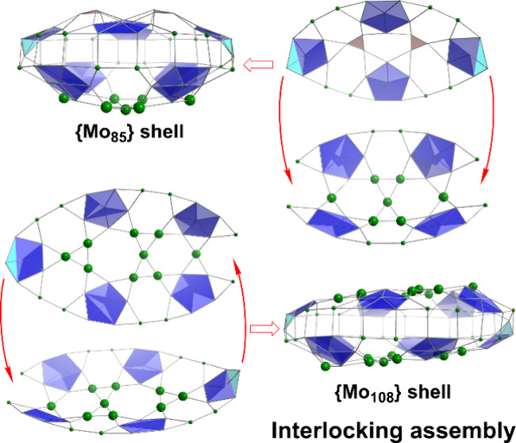
Algorithm-driven robotic discovery of polyoxometalate-scaffolding metal-organic frameworks
Journal of the American Chemical Society, 2024, 146 (42), 28952-28960.
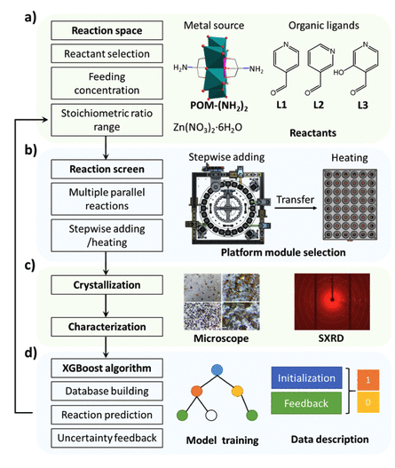
Programmable Chemputable Click Chemistry
Chem, 2024, 10 (9), 2621-2623.
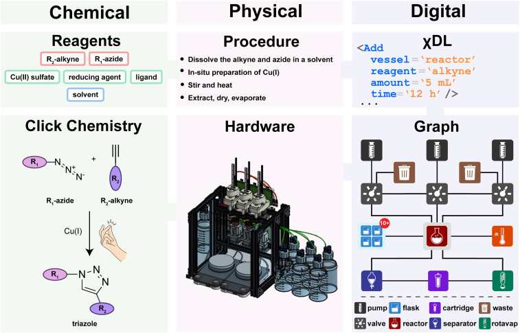
Advanced Sustainable Systems, 2023, 8 (5), 2300607.
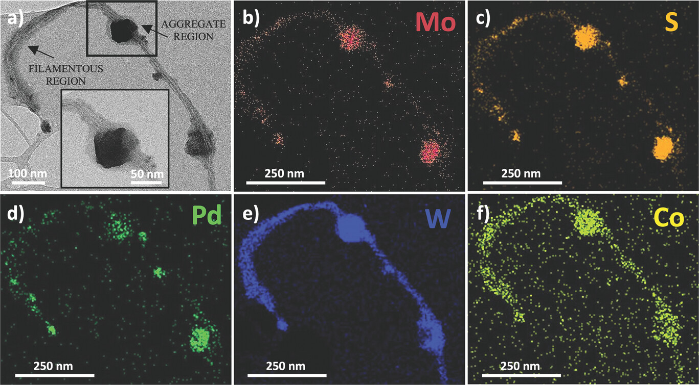
Mechanical interlocking of SWCNTs with N-rich macrocycles for efficient ORR electrocatalysis
Chemical Science, 2022, 13 (33), 9706-9712.
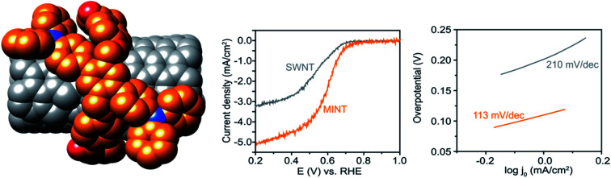
ChemSusChem, 2021, 14 (22), 4973-4984.
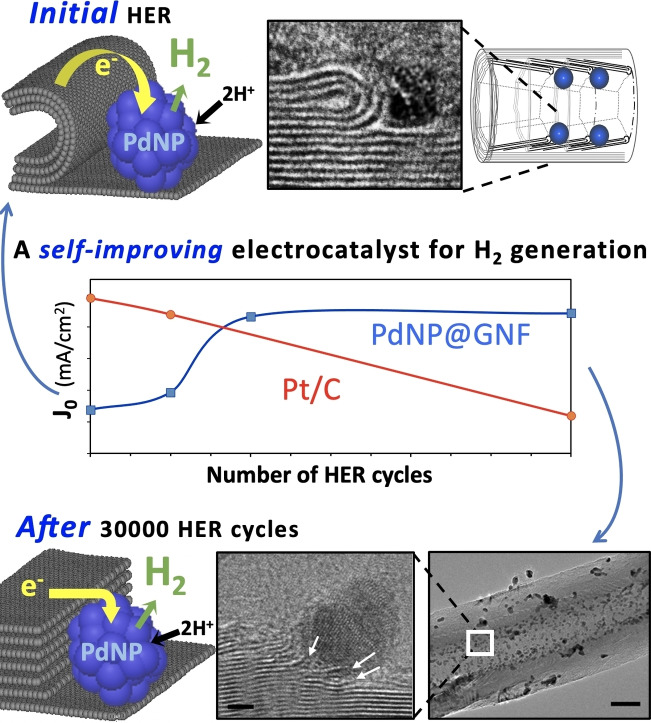
A regularly updated record is also available through Google Scholar .
My research connects digital chemistry, robotic experimentation, electrochemical methods, and materials discovery. I am interested in systems where hardware, chemical reactivity, analytical feedback, and algorithmic decision-making can be treated as one programmable experimental workflow.
Selected project pages, data, and code repositories will be added here. Current public resources are available through my GitHub profile.
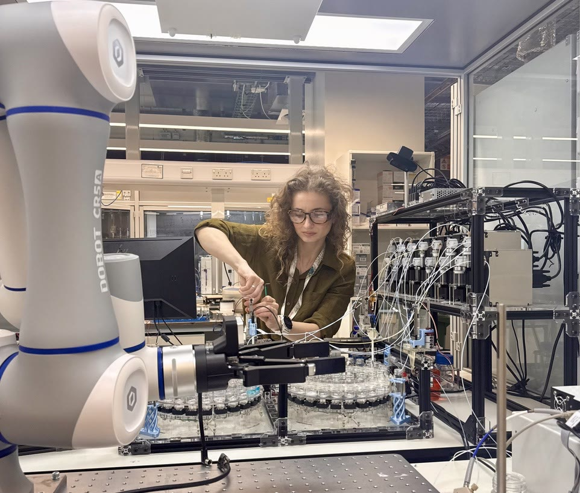
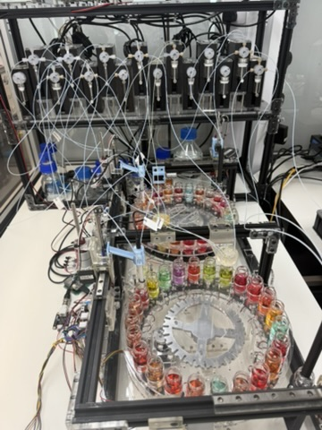
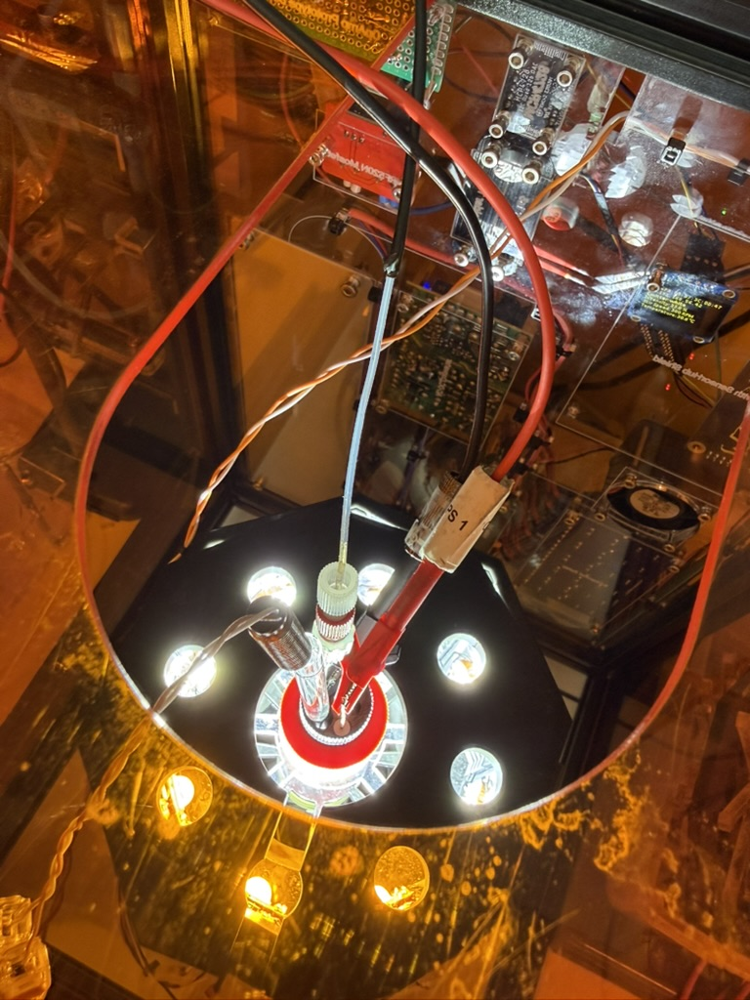
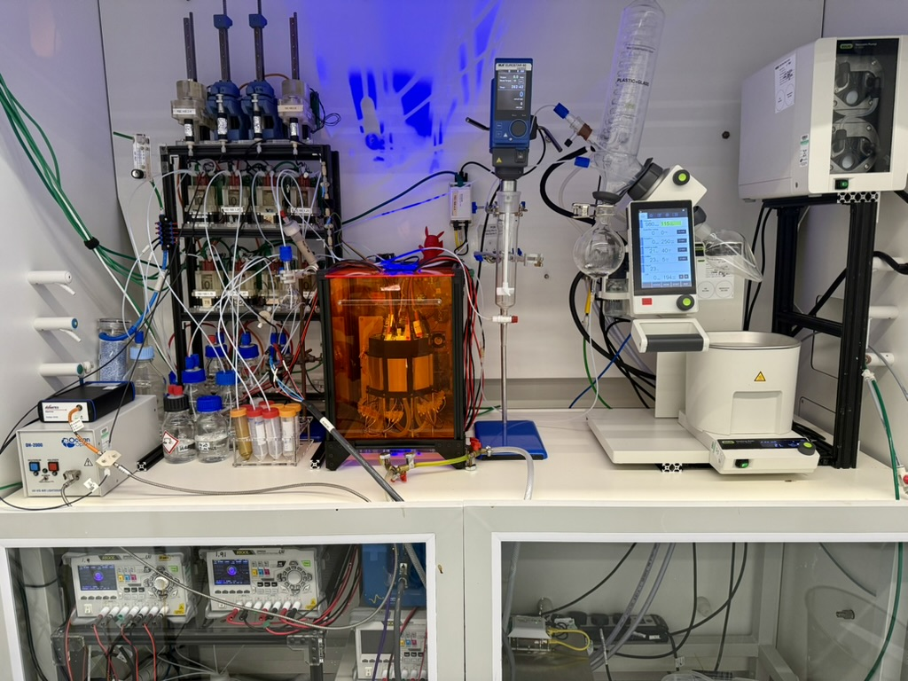
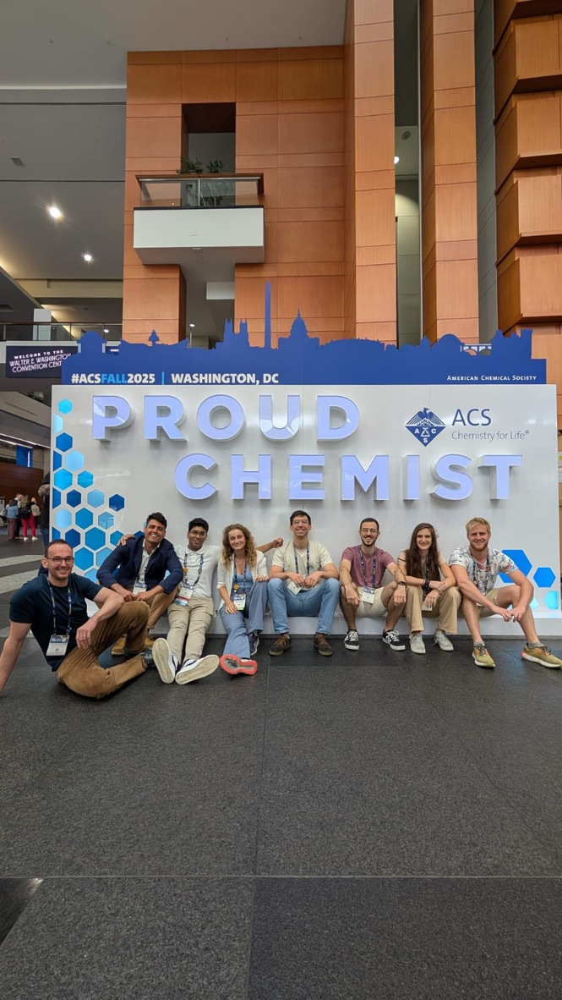